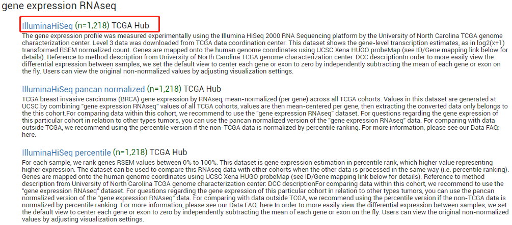
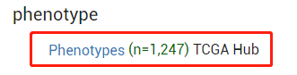
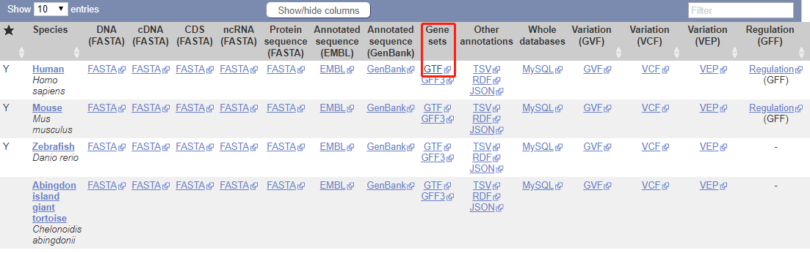
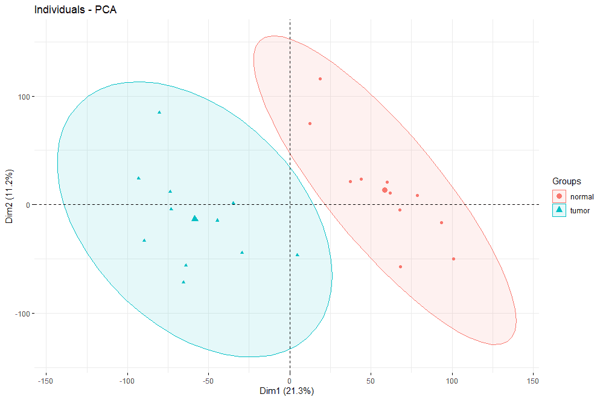
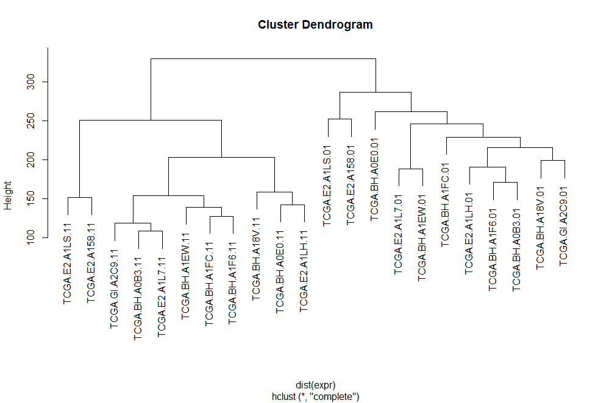
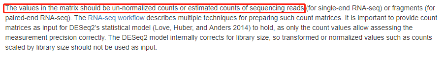
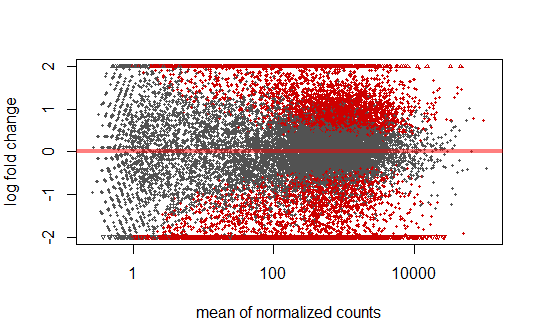
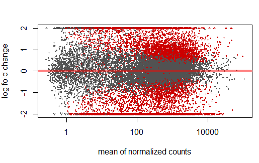
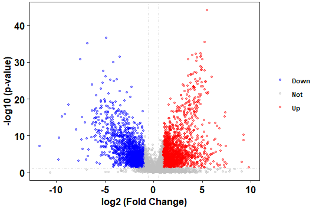
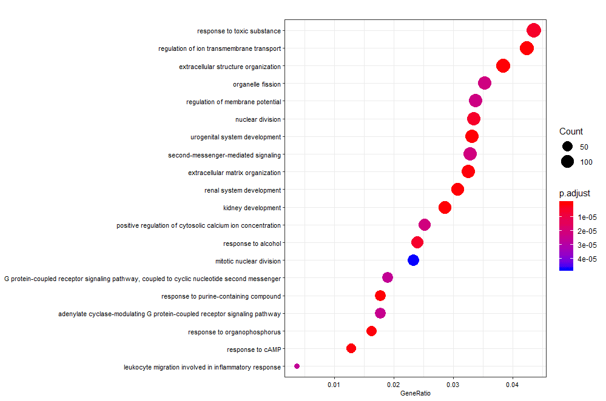

本文写于观看生信技能树公众号（vx: biotrainee）的七步走纯R代码通过数据挖掘复现一篇实验文章（第1到6步） 一文后，感觉生信技能树优秀学徒的工作十分吸引人，就自己动手复现了一次。
Step 00 问题概述
本文的任务是全代码复现一篇paper，标题为 ：Co-expression networks revealed potential core lncRNAs in the triple-negative breast cancer. PMID：27380926
ref： 生信技能树–七步走纯R代码通过数据挖掘复现一篇实验文章（第1到6步）
我们复现的文章是对8名乳腺癌的患者的转录组测序数据的分析。复现测序的流程恐怕不太现实，但是我们可以通过TCGA数据库中的肿瘤数据复现文章的数据分析流程。
本文的分析流程 包括：
下载数据
数据清洗
质量控制
差异分析
注释mRNA,lncRNA
富集分析
至于WGCNA分析在本文就不再复现了，有兴趣的同学也可以查阅生信技能树的文章七步走纯R代码通过数据挖掘复现一篇实验文章（第七步WGCNA）
Step 01 数据下载
选择TCGA的breast cancer data


下载RNAseq表达矩阵和临床信息
P.S. 要注意的是在生信技能树中使用的是GDC的breast cancer dataset，而本文使用的是TCGA 的。两个dataset分析出来的数据差异颇大。

随后，下载文件**“Homo_sapiens.GRCh38.98.chr.gtf.gz”**即可。
Step 02 数据清洗
该步骤需要从临床信息中提取中三阴性乳腺癌样本的临床信息与表达矩阵，并将肿瘤样本与正常样本进行配对。
三阴性乳腺癌(Triple-negative breast cancer, TNBC) : 指的是以下三种受体均不表达的乳腺癌类型：
雌激素受体：estrogen receptor (ER) ;
孕激素受体：progesterone receptor(PR) ;
人类表皮生长因子受体2： HER2/neu
1 2 3 4 5 6 7 8 9 10 11 12 13 14 15 16 17 18 19 20 21 22 23 24 25 rm(list = ls()) p <- read.table('.../data/BRCA_clinicalMatrix' ,header = T , sep = '\t' ,quote = '' ) colnames(p)[grep("receptor_status" , colnames(p))] table(p$breast_carcinoma_estrogen_receptor_status == 'Negative' & p$breast_carcinoma_progesterone_receptor_status == 'Negative' & p$lab_proc_her2_neu_immunohistochemistry_receptor_status == 'Negative' ) tnbc_samples <- p[p$breast_carcinoma_estrogen_receptor_status == 'Negative' & p$breast_carcinoma_progesterone_receptor_status == 'Negative' & p$lab_proc_her2_neu_immunohistochemistry_receptor_status == 'Negative' , ]
在TCGA的命名规则中样本名字的第14,15个字符是以两位数字表示的，其中01-09表示肿瘤样本，10-16表示正常对照样本，具体对应关系可查看其帮助网页：https://gdc.cancer.gov/resources-tcga-users/tcga-code-tables/sample-type-codes
因此，在后续分析中我们分别将对应位置为01的分到tumor group，11的分为normal group
1 2 3 4 5 6 7 8 9 10 11 12 13 14 15 16 17 18 19 20 21 22 23 24 25 26 27 28 29 30 31 32 33 34 35 36 37 38 39 40 41 42 43 44 45 46 47 48 49 50 51 52 53 54 library(stringr) tab1 <- tnbc_samples[1 :2 ] tumor <- tab1[substr(tab1$sampleID,14 ,15 ) < 10 ,] tumor$TCGAID <- str_sub(tumor$sampleID,1 ,12 ) normal <- tab1[!substr(tab1$sampleID,14 ,15 ) <10 ,] normal$TCGAID <- str_sub(normal$sampleID,1 ,12 ) dim (tumor)dim (normal)tnbc_samples_paired <- merge(tumor,normal,by = 'TCGAID' ) tnbc_samples_paired <- tnbc_samples_paired[-6 , ] save(tnbc_samples_paired, file = "data/tnbc_samples_paired.Rdata" ) rawdata <- read.csv("data/HiSeqV2" , sep = '\t' , header = T ) rawdata <- as.data.frame(rawdata) rawdata[1 :3 ,1 :3 ] tnbc_samples_paired[1 ,"sampleID.x" ] t_idfordata <- tnbc_samples_paired$sampleID.x t_idfordata <- gsub('-' ,'.' ,t_idfordata) tnbc_samples_paired$t_dataid <- t_idfordata n_idfordata <- tnbc_samples_paired$sampleID.y n_idfordata <- gsub('-' ,'.' ,n_idfordata) tnbc_samples_paired$n_dataid <- n_idfordata table(colnames(rawdata) %in% tnbc_samples_paired$t_dataid) tab2 <- rawdata[ ,colnames(rawdata) %in% tnbc_samples_paired$t_dataid] tab3 <- rawdata[ ,colnames(rawdata) %in% tnbc_samples_paired$n_dataid] tab2 <- tab2[, str_sub(colnames(tab2),1 ,12 ) %in% str_sub(colnames(tab3),1 ,12 )] expr <- cbind(tab2, tab3) rownames(expr) <- rawdata[ ,1 ] expr <- t(expr) expr[1 :3 ,1 :3 ] save(expr,file = "data/TNBC_pair_expr.Rdata" )
Step 03 质量控制
提取表达矩阵后，我们需要对提取到的数据进行质量检测，看看分组是否正确等等。在这里分别使用PCA 和聚类 的方法对表达矩阵进行分析。一般而言，两者之一都可以作为表达矩阵质量分析的可视化结果，在此处为了展示方式方法的多样性，我们都将其进行展示。
1 2 3 4 5 6 7 8 9 10 11 12 library(factoextra) library(FactoMineR) group <- c (rep ('tumor' ,11 ), rep ('normal' ,11 )) expr.pca <- PCA(expr,graph = F ) fviz_pca_ind(expr.pca, geom.ind = "point" , col.ind = group, addEllipses = TRUE , legend.title = "Groups" )

1 2 plot(hclust(dist(expr)))

两种分析都将tumor和normal group清晰地分开，说明表达矩阵质量良好。
Step 04 差异表达分析
本次差异分析使用DESeq2进行，由于DESeq2要求 输入的表达矩阵数据是原始的counts数据，而TCGA上表达矩阵的值是进行过log2(count + 1)校正的，因此在差异分析之前，需要进行un-normalized

1 2 3 4 5 6 7 8 9 10 11 12 library(DESeq2) dat <- as.data.frame(t(expr)) dat <- 2^dat - 1 dat <- ceiling (dat) dat[1 :3 ,1 :3 ]
在DESeq2分析过程中，会将表达矩阵存储在dds对象中，以存储中间变量和进行一部分计算。dds对象的构建需要包括以下几方面数据：
Raw counts matrix ：行为基因，列为样本的基因表达数据colData ：存储样本信息design formula ：指明在模型中的变量，并用于估计模型的离散值 和log2 fold changes
1 2 3 4 5 6 7 8 9 10 11 12 13 14 15 16 17 18 19 20 21 22 23 24 25 26 27 28 29 30 group_list <- factor(rep (c ('tumor' ,'normal' ), each = 11 )) colData <- data.frame(row.names=colnames(dat), group_list=group_list) dds <- DESeqDataSetFromMatrix(countData = dat, colData = colData, design = ~group_list, tidy = F ) dim (dds)table(rowSums(counts(dds)==0 )) keep <- rowSums(counts(dds)==0 )< 16 dds <- dds[keep, ] counts(dds)[1 :10 ,1 :3 ] dim (dds) dds <- DESeq(dds) vsd <- vst(dds, blind = F ) contrast <- c ("group_list" ,"tumor" ,"normal" ) dd1 <- results(dds, contrast=contrast, alpha = 0.05 ) plotMA(dd1, ylim=c (-2 ,2 ))

MA-plot用于可视化fold change与gene counts之间的关系，默认情况下P < 0.1的值会被标红，而超过y轴范围的值则以三角形表示lfcShrink可对log fold change进行矫正以消除低表达基因带来的误差
1 2 3 4 5 6 7 8 9 10 11 12 13 14 15 16 17 18 19 20 21 22 23 24 25 26 27 dd3 <- lfcShrink(dds, coef = "group_list_tumor_vs_normal" , res=dd1, type='apeglm' ) dd3 plotMA(dd3, ylim=c (-2 ,2 )) summary(dd3, alpha = 0.05 ) sig <- abs (dd3$log2FoldChange)>1 & dd3$padj<0.05 res_sig <- dd3[sig,] summary(res_sig) save(dd3,res_sig,vsd, file = '.../data/TCGA_TNBC_DE.Rdata' )

火山图展示fold-change与p-value的关系
1 2 3 4 5 6 7 8 9 10 11 12 13 14 15 16 17 18 19 20 21 22 23 24 library(ggplot2) library(ggthemes) res <- as.data.frame(dd3) res$threshold <- as.factor(ifelse(res$padj < 0.05 & abs (res$log2FoldChange) >=log2(2 ),ifelse(res$log2FoldChange > log2(2 ) ,'Up' ,'Down' ),'Not' )) plot2 <- ggplot(data=res, aes(x=log2FoldChange, y =-log10(padj), colour=threshold,fill=threshold)) + scale_color_manual(values=c ("blue" , "grey" ,"red" ))+ geom_point(alpha=0.4 , size=1.2 ) + theme_bw(base_size = 12 , base_family = "Times" ) + geom_vline(xintercept=c (-0.5 ,0.5 ),lty=4 ,col="grey" ,lwd=0.6 )+ geom_hline(yintercept = -log10(0.05 ),lty=4 ,col="grey" ,lwd=0.6 )+ theme(legend.position="right" , panel.grid=element_blank(), legend.title = element_blank(), legend.text= element_text(face="bold" , color="black" ,family = "Times" , size=8 ), plot.title = element_text(hjust = 0.5 ), axis.text.x = element_text(face="bold" , color="black" , size=12 ), axis.text.y = element_text(face="bold" , color="black" , size=12 ), axis.title.x = element_text(face="bold" , color="black" , size=12 ), axis.title.y = element_text(face="bold" ,color="black" , size=12 )) + labs( x="log2 (Fold Change)" ,y="-log10 (p-value)" ) plot2

Step 05 注释
文章中对数据注释后分为了mRNA和lncRNA，并对两者分别进行了分析。接下来我们也将利用Ensembl 的GTF进行注释。
1 2 3 4 5 6 7 8 9 10 11 12 13 14 15 16 17 18 19 20 21 22 23 24 25 26 27 28 29 30 31 32 33 34 35 36 37 38 39 40 41 42 43 44 45 46 47 library(rtracklayer) library(tidyr) library(dplyr) library(pheatmap) require(org.Hs.eg.db) gtf1 <- import('data/Homo_sapiens.GRCh38.98.chr.gtf' ) gtf_df <- as.data.frame(gtf1) colnames(gtf_df) gtf <- gtf_df[,c (10 ,14 )] head(gtf) save(gtf,file = "data/Homo_sapiens.GRCh38.98.chr.Rdata" ) keytypes(org.Hs.eg.db) res_sig$gene_names <- rownames(res_sig) res_id <- clusterProfiler::bitr(res_sig$gene_names, fromType = 'SYMBOL' , toType = "ENSEMBL" , OrgDb = 'org.Hs.eg.db' ) k <- res_id[res_id$ENSEMBL %in% gtf$gene_id, 2 ] %>% match(gtf$gene_id) id_keep <- gtf[k,] colnames(res_id) <- c ("gene_names" ,'gene_id' ) id_keep <- merge(id_keep, res_id, by='gene_id' ) res_ord <- as.data.frame(res_sig[order(res_sig$padj),]) res_mrna <- id_keep[id_keep$gene_biotype=='protein_coding' ,] %>% merge(as.data.frame(res_ord), by = "gene_names" ) res_lncrna <- id_keep[id_keep$gene_biotype=='lncRNA' ,] %>% merge(as.data.frame(res_ord), by = "gene_names" ) save(res_ord,res_mrna,res_lncrna, file = '.../data/TCGA_annotation_results.Rdata' )
Step 06 富集分析
富集分析及其可视化采用clusterProfiler进行，由于kegg识别的ID为"ENTREZID"，因此在分析之前也进行了一次转换。同时，在转换的过程中出现了"ENSEMBL"–“ENTREZID” multi-mapping的情况，因此我们移除了冗余的id。
1 2 3 4 5 6 7 8 9 10 11 12 13 14 15 16 17 18 19 20 21 22 23 24 25 26 27 28 29 30 31 32 33 34 library(clusterProfiler) library(org.Hs.eg.db) library(ggplot2) library(RColorBrewer) library(gridExtra) library(enrichplot) deid <- bitr(res_mrna$gene_id, fromType = "ENSEMBL" , toType = "ENTREZID" , OrgDb = 'org.Hs.eg.db' ) deid <- a[!duplicated(a$ENSEMBL),] ego_BP <- enrichGO(gene = deid$ENTREZID, OrgDb = org.Hs.eg.db, keyType = "ENTREZID" , ont = "BP" , pvalueCutoff = 0.05 , qvalueCutoff = 0.05 , readable = TRUE ) dotplot(ego_BP, showCategory = 20 ,font.size = 8 ) ego_KEGG <- enrichKEGG(gene = deid$ENTREZID, organism = "hsa" , keyType = 'kegg' , pvalueCutoff = 0.05 , pAdjustMethod = "BH" , minGSSize = 10 , maxGSSize = 500 , qvalueCutoff = 0.05 , use_internal_data = FALSE ) dotplot(ego_KEGG, showCategory = 20 ,font.size = 8 )

本次代码复现也到此暂告一段落，可能是由于数据集或是分析代码的改动，我们注释到的显著差异表达的lncRNA只有30个，远远小于文章报道的1,211个。原则上，我们应先对差异分析结果注释，再行设定cutoff以找出显著的差异表达基因。但是在先行注释的情况下，仍然只能在本数据集中找到143个lncRNA，让我不禁怀疑不同数据集的差异性真的有这么大？亦或是由样本的差异性所导致的？
1 2 3 4 5 6 7 8 9 10 11 12 13 14 15 16 17 18 19 20 21 22 23 24 25 26 27 28 29 30 31 dd3$gene_names <- rownames(dd3) res_id2 <- clusterProfiler::bitr(dd3$gene_names, fromType = 'SYMBOL' , toType = "ENSEMBL" , OrgDb = 'org.Hs.eg.db' ) dim (res_id2)k2 <- res_id2[res_id2$ENSEMBL %in% gtf$gene_id, 2 ] %>% match(gtf$gene_id) id_keep2 <- gtf[k2,] colnames(res_id2) <- c ("gene_names" ,'gene_id' ) id_keep2 <- merge(id_keep2, res_id2, by='gene_id' ) table(id_keep2$gene_biotype) lncRNA misc_RNA 143 1 polymorphic_pseudogene processed_pseudogene 12 12 protein_coding ribozyme 15534 1 scaRNA snoRNA 5 26 TEC TR_C_gene 3 1 transcribed_processed_pseudogene transcribed_unitary_pseudogene 33 14 transcribed_unprocessed_pseudogene unitary_pseudogene 79 1 unprocessed_pseudogene 3
不论分析结果如何，本次分析流程也是十分值得学习的。至于文中的疑问在解决后会回来填坑的！最后，再次感谢生信技能树（vx: biotrainee）的分享，大家快去关注吧！
补坑 TCGA Breast Cancer (BRCA) 的数据集中我暂时还没发现到转录组的表达矩阵，该数据集的RNA-seq数据基本上是使用polyA+ IlluminaHiSeq，意味着测序的基本上都是mRNA。miRNA的data倒是有，但整个转录组的data还没找到，如果有找到的朋友也可以告知我。
补充于2019/10/13
完。